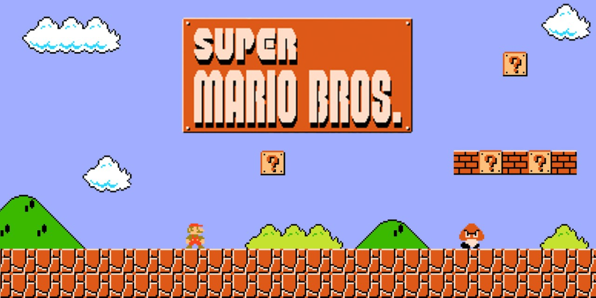
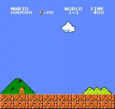
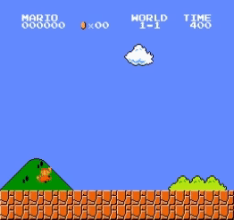
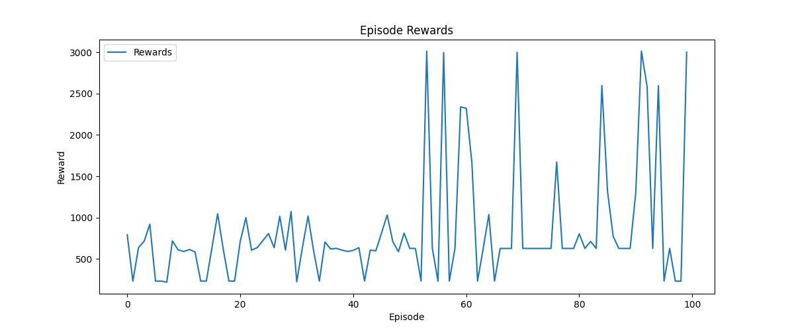

End-to-End Deep
Reinforcement Learning for Super Mario
A CNN + DQN game-playing agent trained end-to-end to complete Super Mario Bros levels, learning visual representation and control policy jointly through replay memory, target networks, and iterative evaluation.

Problem
Train an agent to interpret game-state visuals and reach the level flag through reinforcement learning.
My Role
Designed the end-to-end CNN + DQN pipeline, environment wrappers, replay logic, training scripts, and evaluation workflow.
Outcome
Achieved consistent flag-reaching behaviour after ~60k episodes by replacing separated CNN/DQN training with joint optimisation.
Training Evolution
The first version trained the CNN feature extractor and DQN separately, which created weak alignment between learned visual features and the final policy objective. This led to unstable gameplay and inconsistent level completion.
In the second version, the architecture was redesigned into a single end-to-end model so that visual representation learning could directly optimise action quality. This significantly improved policy stability and allowed the agent to complete levels much more consistently than the earlier approach.
The final model was trained for approximately 60k episodes over around 50 hours on an NVIDIA RTX 3070, with the best checkpoint showing reliable flag-reaching performance.

Version 1 — Separate CNN and DQN training

Version 2 — End-to-end joint optimisation
Learning Architecture
The learning system combined a convolutional neural network as the visual feature extractor with a Deep Q-Network for action-value estimation. Training relied on experience replay, a target network for stability, and epsilon-greedy exploration to balance exploration and exploitation.
- End-to-end CNN + DQN policy learning
- Replay buffer for sample efficiency and stability
- Target network updates for controlled convergence
- Custom environment wrappers for training and evaluation
Design lesson: in visually rich RL tasks, representation learning and control policy should be optimised together rather than isolated into separate stages.
Policy Evaluation
To validate the robustness of the learned policy, I conducted a 100-episode epsilon decay experiment. The first 50 episodes used full exploration (epsilon = 1.0), while the remaining 50 gradually reduced epsilon to 0.1, shifting the agent toward exploitation of learned behaviours.
Reward improved as the agent moved from exploration to exploitation. Peaks approaching 3000 reward corresponded to successful flag completion, confirming that the policy generalised beyond the original training run.

Key Findings
The most important takeaway from this project was that feature learning and decision-making must be tightly coupled in complex visual reinforcement learning environments. When the CNN and DQN were trained separately, representation mismatch limited performance; when trained jointly, the policy became significantly more stable and effective.
This project strengthened my experience in deep reinforcement learning, PyTorch model development, GPU training workflows, custom environment abstraction, and quantitative policy evaluation.